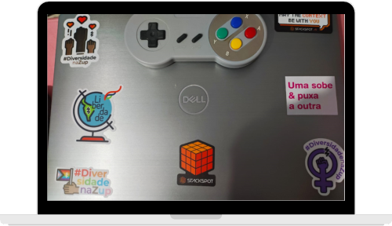

Meus Projetos
Aqui você vai encontrar documentações para utilizar as ferramentas que apresento em meus conteúdos. Fique à vontade para explorar e descobrir como elevar a qualidade dos seus projetos de software!

Aqui você vai encontrar documentações para utilizar as ferramentas que apresento em meus conteúdos. Fique à vontade para explorar e descobrir como elevar a qualidade dos seus projetos de software!